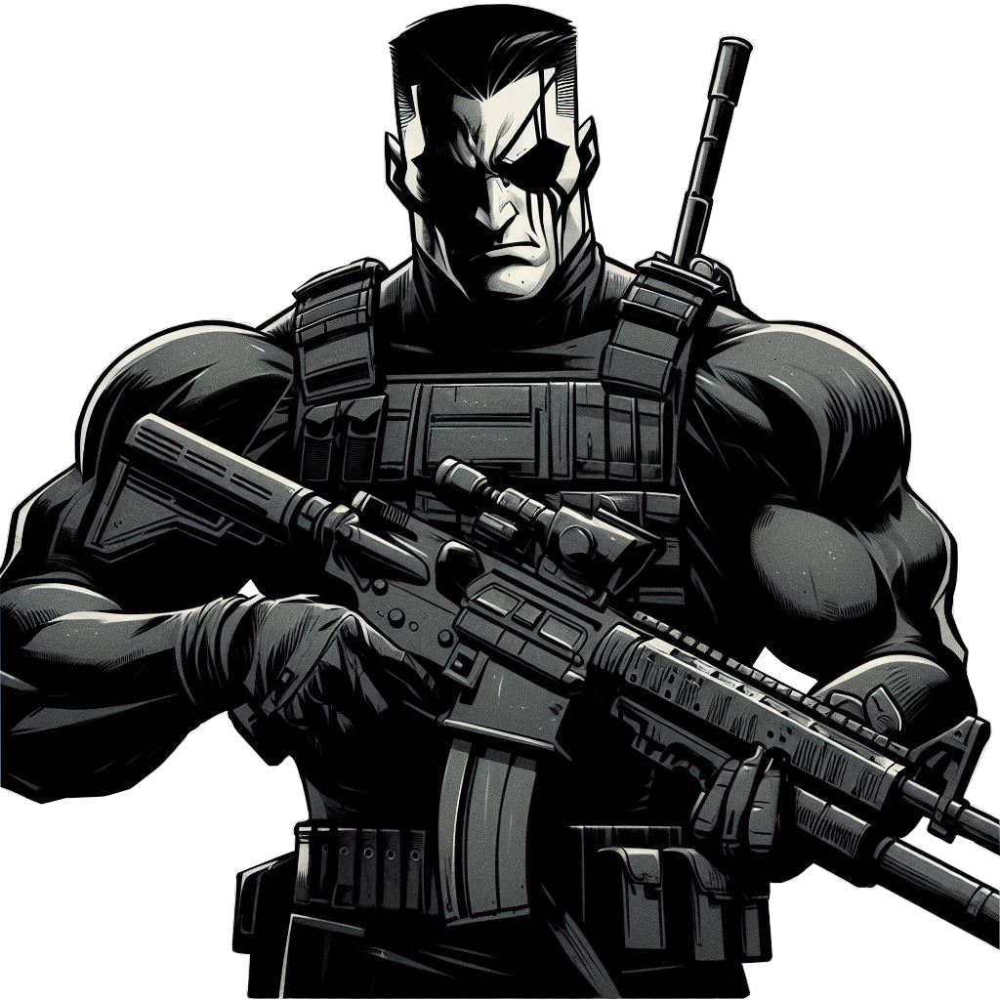
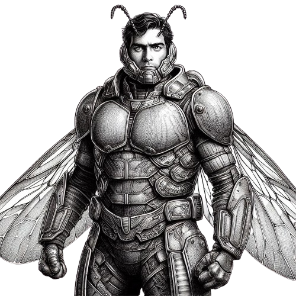
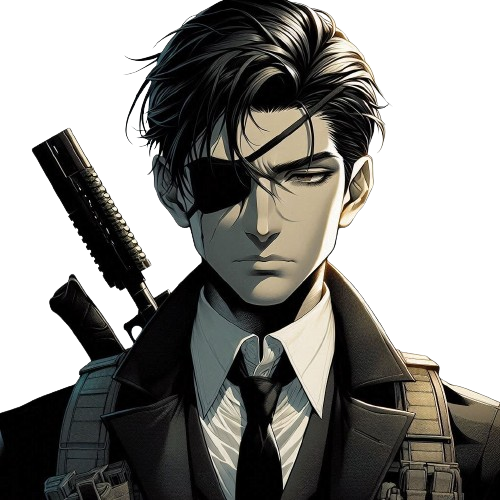
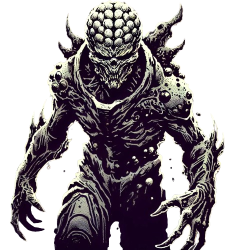

-
Capitão Renascimento
Descrição
Nome: Desmond Souza
Codinome: Capitão Renascimento
Origem: Natural do Rio de Janeiro
O pequeno Desmond sempre admirava o exército e quando finalmente teve idade ele ingressou no exército como oficial. Durante uma operação no Canadá ele foi atacado por um urso, oque justifica o seu temido tampa olho. Durante uma operação em sua terra natal ele foi morto por uma emboscada feita por policiais corruptos que dominavam a região. Sua morte foi muito sentida por todos, onde se desenvolveu um mística no exército em que toda vez que a operação ia se fracassando, os militares gritam "RENASCIMENTO RENASCE POR LIMA" e uma sombra com roupa camuflada surge da escuridão e faz aquilo que deve ser feito. E com isso os vingadores por meio de estudos e muito trabalho eles conseguem renascer o renascimento de uma vez por todas, onde agora ressuscitado o Capitão Renascimento compõe o time dos Vingadores, sendo o primeiro super herói brasileiro.Habilidades
- Ubiquidade
- Liderança
- Estrategista
- Super-força
-
Homem-Besouro
Descrição
Nome: Jake Ferwell
Codinome: Homem-Besouro
Origem: Natural de Los Angeles
Jake era apenas um garoto quando foi abandonado por seus pais, deixado sozinho nas ruas de Los Angeles, Jake encontrou um velho biólogo, que o adotou e ensinou a ele tudo o que sabe sobre inseto. Um dia Jake estava mexendo no terrário de besouros, quando acidentalmente caiu dentro dele, sendo coberto por besouros que o picaram e deram a ele poderes especiais, desde então se tornou o Homem-Besouro e ajuda a combater o crime com os Vingadores.Habilidades
- Armadura Blindada
- Super Resistência
- Super Força
- Vôo
-
Seo
Descrição
Nome: Kenedy
Condinome: Seo
Origem: Natural de Dretoit
Seo nasceu numa família onde a perfeição sempre foi cobrada, seu pai um militar aposentado lhe ensinou desde pequeno a como ser um bom guerreiro para um dia ser como ele já foi, durante toda sua infância não conviveu com pessoas além de seus pais então, não sabe muito bem a lidar com outras pessoas, quando completou a maioridade foi para o exército onde se destacou graças sua força, inteligente e disciplina. Após perder seu olho em uma de suas missões foi visto como defeituoso e imperfeito por ele mesmo o que lhe fez achar não ser bom para o trabalho que foi designado, saindo do exército mudou para uma nova cidade, onde mais tarde foi de forma misteriosa parar em uma organização que ajuda a sociedade.Habilidades
- Inteligencia em combate
- Habilidade em combates corpo a corpo
- Habilidade com facas
- Fisíco Excepcional
-
Orion
Descrição
Codinome:Orion
Origem:Nave espacial desconhecida
Nascido em uma nave espacial que foi criada pela queda de um asteroide, na qual foi atacada por uma gangue inimiga. Orion não conheceu seus pais, e sua primeira lembrança é a fria escuridão do espaço e o zumbido constante dos motores da nave, que o acalmavam enquanto ele crescia. A nave, chamada Astral, foi construída às pressas após a destruição do planeta natal de seus pais, um mundo próspero que caiu sob a ira de um asteroide inesperado. Na queda da nave ,ocorreu um grande vazamento radioativo, onde obteve uma grande mutação , a radioatividade o transformou em mutante.Habilidades
- Mutação
- Pode se trasformar em qualquer vilão
- Habilidade regenerativa poderosa
- Conhecida como fator de cura